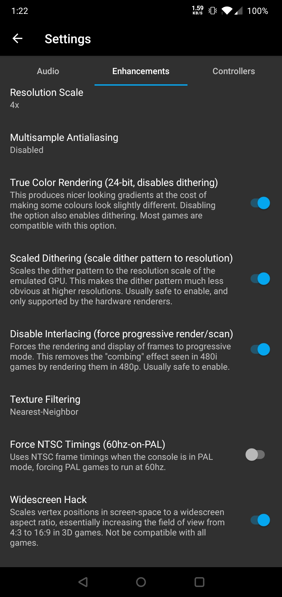
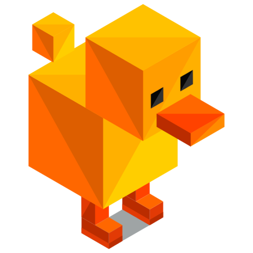

DuckStation 深度盘点：一款把 PS1 模拟器做到"无死角"的作品
从游戏格式兼容、画质增强到金手指与成就系统，全方位梳理 DuckStation 的能力边界、亮点和局限，帮你判断它是不是你的菜。
PS1 模拟器这条赛道走到今天，已经远不止"把老游戏跑起来"这么简单。画质增强、成就追踪、金手指、多平台覆盖——每一项单独拎出来都能写一篇。去DuckStation官网看一眼你就会发现，它在这条路上走得尤其激进：不只是把 ePSXe 时代的功能一个个复刻，而是在每个方向上都做了自己的判断和取舍。盘点一下它的能力面，你会发现这其实是一款"什么都想让你用得舒服"的模拟器。
格式兼容：光盘镜像的"全能选手"
任何模拟器第一道关就是两件事：先从DuckStation下载拿安装包装好模拟器本体，然后准备好你的镜像文件。DuckStation 在镜像格式上没有做奇怪的选择，而是把主流格式一网打尽：BIN/CUE、ISO、CHD、ECM、MDS/MDF、CCD、PBP——从早年抓轨留下来的镜像到后来的压缩格式，它都能认。
这里面最值得说的是 BIN/CUE 和 CHD 的关系。BIN/CUE 是 PS1 镜像的"原生形态"，.bin 装数据、.cue 装索引，两者必须同名同目录配套存在，否则轻则丢音乐重则过场动画黑屏。很多人第一次跑 PS1 游戏踩的坑就是只拷了 .bin 没拷 .cue——过场动画没声音、BGM 消失，以为是游戏本身的问题。而 CHD 是无损压缩格式，把 BIN/CUE 压成一个单文件，体积能缩到原来的三分之一到一半，游戏内容却一点没丢。社区普遍建议：手头的 BIN/CUE 早晚转成 CHD，省空间还省心。
PBP 是个特殊案例——它是索尼给 PSP 设计的封装格式，多碟游戏可以打包成一个文件。但兼容性反而不如 CHD，个别游戏在 PBP 下会出成就识别问题。手头已有 PBP 且跑得正常的不必强行转，但新下载的镜像优先选 CHD 版本准没错。
除了镜像，DuckStation 还支持直接读实体光盘（桌面端）、自制程序 ELF 引导、PSF 音乐文件播放，甚至能自动加载同名的 PPF 补丁文件。这套组合拳下来，PS1 生态里能见到的输入源基本没有它啃不动的。
画质增强：从马赛克到高清的完整链路
这是 DuckStation 区别于老牌 PS1 模拟器最核心的一块。PS1 原生输出只有 320×240，直接扔到现代屏幕上就是满屏马赛克。内部分辨率（Resolution Scale）是画质提升的第一开关——原理不是简单拉大画面，而是让模拟 GPU 在绘制时直接按更高倍数光栅化，多边形边缘干净锐利，相当于让游戏"原生"画在 1080p 甚至 4K 上。
分辨率倍数从 1x 到 10x 都能选，也可以直接指定目标分辨率（720p、1080p、4K）。手机用户的甜点档是 2x~3x，性能开销温和；外接屏幕或旗舰掌机可以拉到 1080p，FF7、GT2 这类重负载 3D 游戏在高倍下对性能要求陡增，但体验提升同样夸张。纯 2D 像素游戏是个例外——开高倍只会放大像素点，没有 3D 锐化收益，保持 1x~2x 配合整数缩放反而更舒服。
分辨率之外，真彩渲染（True Color Rendering）消除色彩断层，抖动图案缩放（Scaled Dithering）让 PS1 伪渐变的噪点在高分辨率下不那么扎眼，PGXP 几何修正解决多边形穿插和贴图扭曲的老问题，抗锯齿与降采样收尾。这整套链路下来，同样一款 PS1 游戏在 DuckStation 里和在实体机上完全是两个观感。

还有一些容易被忽略的小开关：强制 NTSC 让 PAL 版游戏跑 60 帧，每游戏设置为某款游戏单独保存一套增强参数（有的游戏开了真彩反而颜色不对，关掉就好），HD 纹理替换让你可以加载社区制作的高清贴图包。把这些组合起来调一调，体验上完全对得起"把老游戏翻新一遍"这个说法。
金手指与成就：两种互斥的游戏态度
DuckStation 内置了社区维护的金手指数据库，覆盖四千多款游戏。启用流程非常顺滑：游戏内呼出暂停菜单，进 Patch Codes 页勾选想要的代码——无限金钱、全武器、解锁隐藏关卡，大多数热门游戏开箱即查，不用自己去网上翻代码再手动输入。桌面端在游戏列表右键 - Properties - Cheats 页操作，逻辑一致。
但这里有一个硬性冲突：金手指和 RetroAchievements 硬核模式互斥。刷成就时开了金手指，成就系统会直接拒绝记录。这其实反映了两类用户的不同诉求——一类想轻松通关体验剧情，另一类想挑战原版的硬核难度拿成就。DuckStation 把两条路都给你铺好了，自己选。
成就系统本身也值得说一下：接入的 RetroAchievements 是一个跨平台的开源成就平台，PS1、MD、GBA 等多机种共用同一个账号。DuckStation 对成就的支持相当完整，从单机成就到排行榜都有，甚至支持成就解锁时的弹窗通知。对追求游戏完成度的玩家来说，这一点比传统 PS1 模拟器强出不止一个档次。

故障排查：给每一种画面异常都配了药方
模拟器的"易用性"不止体现在功能多，还体现在出问题时能不能快速定位。DuckStation 的文档里把六种典型画面异常对应六条修复路径写得非常细，不会让你在一堆设置里瞎试。
整屏花掉或随机色块，九成是渲染器驱动问题，切一下 Vulkan 和 OpenGL 就好；贴图扭曲、爬行，去开 PGXP 的 Texture Correction 和 Geometry Correction；多边形穿插、深度错乱，开 PGXP 的 Depth Buffer；颜色不对、渐变色带，检查 True Color Rendering；HD 纹理包后画面破碎，大概率是序列号不匹配或包本身有问题。最狠的兜底手段是"清空该游戏的每游戏设置回到默认"——确认全局配置没问题后，再逐项恢复增强开关，总能定位到是哪个设置不兼容。
这种"症状→修复"的结构化排错思路，和很多让你"一个个开关试过去"的模拟器完全不一样。
短板也要说
说几个必须知道的局限：第一，部分冷门游戏或自制程序可能兼容性一般——PS1 时代有太多小众硬件魔改，DuckStation 没做穷举测试；第二，PCSX2 那级别的调试功能和插件生态它没有，如果你是做 PS1 开发或深度调试的玩家，还是得回到传统模拟器；第三，金手指数据库是社区维护的，太冷门的游戏查不到代码时需要手动输入——地址找错就花屏，需要逐个排除。
什么样的人该用它
- 想在手机上玩 PS1 怀旧游戏的人：DuckStation 的安卓端体验已经相当成熟，手柄映射、触屏虚拟按钮、桌面模式都做好了，装完配置一下就能开玩。
- 对画质有追求的怀旧党：内部分辨率、PGXP、真彩渲染这套组合拳，让你能用现代设备重新体验这些老游戏的画面——很多游戏你小时候玩过但没意识到画面能这么好。
- 想刷 RetroAchievements 成就的玩家：跨平台统一账号、成就弹窗通知、硬核模式，这一套下来比在各个平台单独刷方便太多。
综合来看，DuckStation 不完美，但它在"把 PS1 体验现代化"这件事上做得非常扎实——格式兼容无死角，画质增强链路完整，金手指和成就两条路都铺好了，出问题时还有清晰的排错指引。如果你的下一个目标是翻出积灰的 PS1 游戏重新玩一遍，它大概率是目前最省心的选择。想深挖它的实现细节和社区资料，GitHub上有完整维护，Gitee有国内镜像，GitCode也同步备了一份。